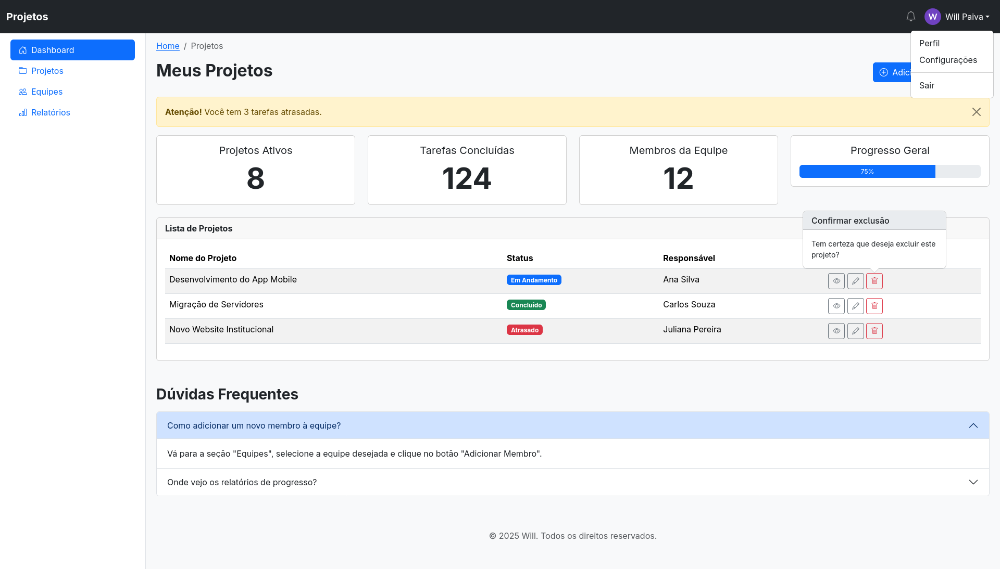
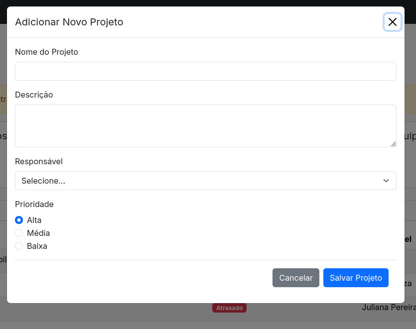

A Regra de Ouro!
Para este desafio, você não deve consultar o código das aulas anteriores. Seu principal recurso deve ser a documentação oficial do Bootstrap 5.3. O objetivo é aprender a pesquisar e implementar componentes de forma autônoma.
O Projeto: "Dashboard"
Você foi contratado para criar a interface de um dashboard de gerenciamento de projetos. A página deve ser totalmente responsiva e utilizar uma vasta gama de componentes do Bootstrap para exibir informações e permitir interações do usuário. A página inteira deve ser construída em um único arquivo HTML.
Estrutura da Página e Componentes Obrigatórios:
-
Cabeçalho Principal (Navbar)Crie uma
.navbarfixa no topo (.fixed-top) com tema escuro (.navbar-dark,.bg-dark). Ela deve conter:- O logo/nome "TaskMaster" como um
.navbar-brand. - No canto direito, um ícone de sino para notificações e um Dropdown com a foto e o nome do usuário, que ao ser clicado, mostra as opções "Perfil", "Configurações" e "Sair".
- O logo/nome "TaskMaster" como um
-
Corpo da Página (Grid e Sidebar)Abaixo da Navbar, o layout principal deve ser dividido em duas colunas:
- Coluna 1 (Sidebar): Deve ocupar 3 das 12 colunas em telas grandes (
.col-lg-3) e ficar oculta em telas pequenas. Use um componente Nav vertical (.nav-pills,.flex-column) para a navegação principal com links como "Dashboard", "Projetos", "Equipes" e "Relatórios". - Coluna 2 (Conteúdo Principal): Deve ocupar 9 das 12 colunas em telas grandes (
.col-lg-9) e 12 colunas em telas pequenas.
- Coluna 1 (Sidebar): Deve ocupar 3 das 12 colunas em telas grandes (
-
Conteúdo: Título e AçõesA primeira coisa dentro da coluna de conteúdo principal deve ser um cabeçalho com:
- Um Breadcrumb indicando a localização, por exemplo: "Home / Projetos".
- Um título
<h1>"Meus Projetos". - Ao lado do título, um botão "Adicionar Novo Projeto" que irá acionar um Modal.
-
Conteúdo: Alerta e Cards de StatusAbaixo do título, inclua:
- Um Alert "dispensável" (com botão de fechar) para mensagens importantes (ex: "Você tem 3 tarefas atrasadas!").
- Uma
.rowcom 4 Cards, cada um mostrando uma estatística: "Projetos Ativos", "Tarefas Concluídas", "Membros da Equipe" e "Progresso Geral". O card de progresso deve conter uma Progress Bar.
-
Conteúdo: Tabela de ProjetosA seção principal do dashboard. Crie uma Tabela responsiva (
.table-responsive) que liste os projetos, contendo as colunas: "Nome do Projeto", "Status", "Responsável" e "Ações".- Use Badges coloridos para a coluna "Status" (ex: "Em Andamento", "Concluído", "Atrasado").
- Na coluna "Ações", adicione ícones para "Editar", "Visualizar" e "Excluir". O ícone de "Visualizar" deve ter um Tooltip com o texto "Ver detalhes". O ícone de "Excluir" deve ter um Popover que pede confirmação antes de apagar.
-
Conteúdo: FAQ (Accordion)Abaixo da tabela, adicione uma pequena seção de "Dúvidas Frequentes" utilizando um Accordion com pelo menos 3 perguntas e respostas sobre como usar o dashboard.
-
Modal: Adicionar Novo ProjetoO botão "Adicionar Novo Projeto" deve abrir um Modal com um formulário completo para cadastro de um novo projeto. O formulário deve conter:
- Campos de texto (
.form-control) para "Nome do Projeto" e "Descrição". - Um Select (
.form-select) para escolher o "Responsável". - Radios (
.form-check) para definir a "Prioridade" (Alta, Média, Baixa). - O formulário deve ter validação nativa do Bootstrap. Pesquise na documentação como fazer isso.
- Campos de texto (
-
RodapéFinalize a página com um
<footer>simples, contendo um texto de copyright. -
Prints de referência
Dashboard

Modal

Boa sorte, Dev!
Este desafio foi desenhado para testar sua habilidade de ponta a ponta. Divirta-se explorando os componentes e construindo uma interface profissional!